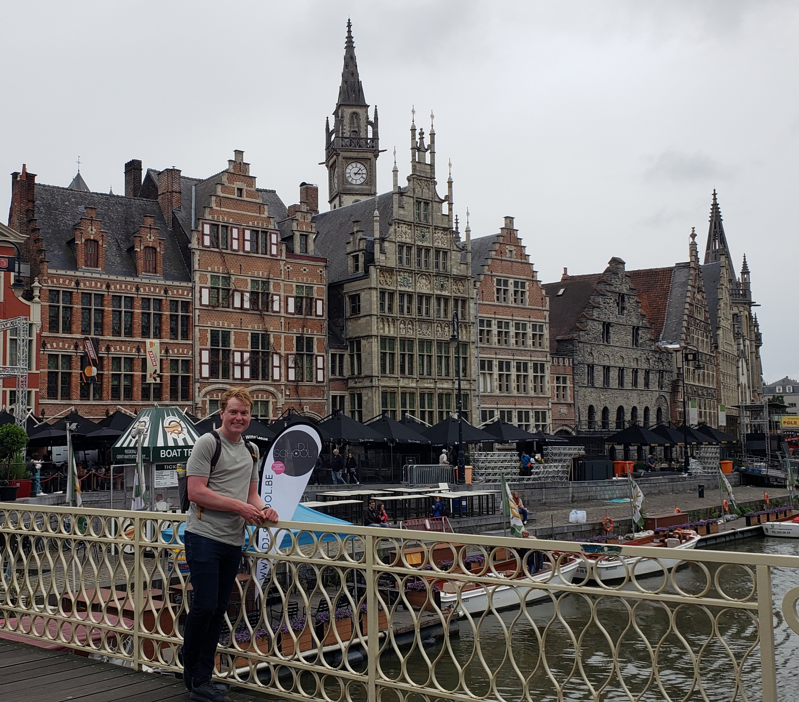

About me
Background, experience, and what drives me as an engineer.
I am 28 years old and graduated from the University of Utah in 2020 with a bachelor's in computer science and a Master's in computer science in 2026, with a specialization in systems and security. I have 4 years of professional experience in tech: 3 years as an intern at Becton Dickinson and 1 year as a software engineer at Sorenson Communications. My work has focused on user-facing products ranging from ultrasound needle-tracking devices to web video services for sign language relay interpreters.
I am skilled in various software frameworks. The last few years I have focused on research in system security and security testing using fuzzing.
My professional experience includes C#, C++, JavaScript/TypeScript, React, Flutter.
I am confident in my ability to contribute as a software engineer. I performed strongly academically while balancing internship work, and my travel experiences broadened my perspective and improved both technical and interpersonal problem-solving.